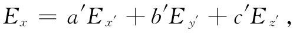
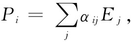

你知道，当我们变换到另一个坐标系x′，y′，z′时，E矢量的分量Ex′ ，Ey′ 和Ez′ 将完全不同——P的分量 也是如此。所以对于不同坐标系，系数αij 将不相同。事实上，你可以通过用适当办法改变E和P的分量而看出那些α应该怎样被改变，因为如果我们在该新坐标系里描述原来的物理 电场，就仍应得到原来的极化强度。对于任一个新的坐标系，Px′ 是Px ，Py 和Pz 的一个线性组合：
Px′ =aPx +bPy +cPz ，
而对于其他各分量也是如此。如果你利用式（31.4）由那些E来代替Px ，Py 和Pz ，则可获得
Px′ =a（αxx Ex +αxy Ey +αxz Ez ）+b（αyx Ex +αyy Ey +…）+c（αzx Ex +…+…）.
然后再用Ex′ ，Ey′ 和Ez′ 来写出Ex ，Ey 和Ez ，例如

式中a′，b′，c′与a，b，c有关，但彼此不相等。因此你就有了以分量Ex′ ，Ey′ 和Ez′ 表示的Px′ 的式子，也就是说，你已有一套新的αij 。这一步骤相当繁复，但却十分直截了当。
当谈论改变坐标轴时，我们正假定晶体在空间 保持不动。若晶体跟着 坐标轴转动，则那些α就不会改变。反之，假如晶体的取向相对于坐标轴变了，则我们就理应有一套新的α。但如果这些α对于晶体的任何 取向为已知，则对于任何其他取向就都可以通过刚才所述的那种变换求得。换句话说，晶体的介电性质可以通过给出相对于任意选定的坐标系的极化率张量αij 而做出完整 的描述。正如我们可以把一矢量速度v=（vx ，vy ，vz ）与一个粒子联系起来那样，只要改变坐标轴就知道这三个分量将按照某一特定方式改变，所以对于晶体来说，我们也将它与它的极化张量αij 联系起来，如果坐标系改变，则这九个分量将按照某一规定方式变换。
式（31.4）中所写出的P与E间的关系可以用更简洁的符号表示：
 （31.5）
这里应理解i代表x，y或z，而在求和符号中的j则取j=x，y和z。为了与张量打交道，已经发明了许多种独特的符号表示法，但每一种方法只对于有限几类问题较方便。一个共同的惯例是省略掉式（31.5）中的求和符号（∑），而留下一个默认 ：每当同一个下脚标（这里是j）出现两次时，就要对它求和。由于我们对张量用得那么少，所以就无需去关心采用任何这种独特的符号表示法或规则了。